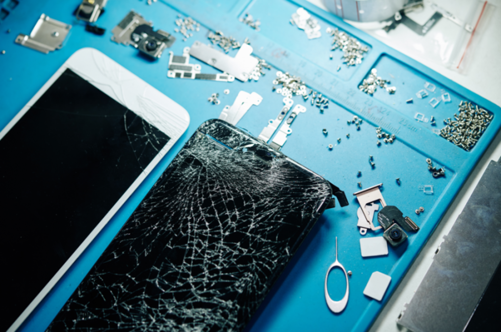
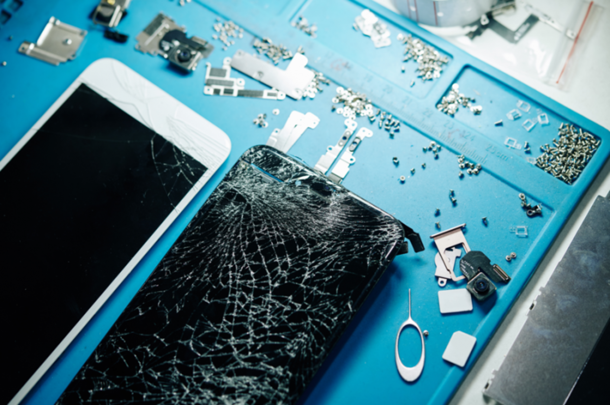

Tok Assistência: Manutenção Especializada
Conte com nossa experiência para manutenção profissional de computadores e celulares, otimizando o desempenho dos seus dispositivos.
Solicitar Atendimento 

Conte com nossa experiência para manutenção profissional de computadores e celulares, otimizando o desempenho dos seus dispositivos.
Solicitar AtendimentoA Tok Assistência é referência em manutenção de computadores e celulares desde 2002. Com mais de 20 anos de experiência, contamos com uma equipe altamente qualificada e apaixonada por tecnologia, pronta para oferecer soluções personalizadas que garantem o máximo desempenho e a longevidade dos seus dispositivos.
Nosso compromisso é proporcionar a melhor experiência para nossos clientes, com serviços rápidos, confiáveis e sempre inovadores. Valorizamos a qualidade em cada detalhe e buscamos superar as expectativas, oferecendo soluções precisas e eficientes para cada necessidade.
Tok Assistência, a sua satisfação é nossa prioridade.